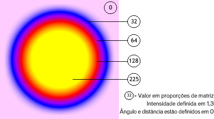
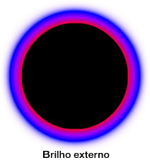

| Pacote | flash.filters |
| Classe | public final class GradientGlowFilter |
| Herança | GradientGlowFilter |
| Versão da linguagem: | ActionScript 3.0 |
| Versões de runtime: | AIR 1.0, Flash Player 9 |
O uso dos filtros depende do objeto ao qual você vai aplicar o filtro:
- Para aplicar os filtros aos objetos de exibição, use a propriedade
filters. Definir a propriedadefiltersde um objeto não modifica o objeto e você pode remover o filtro limpando a propriedadefilters. - Para aplicar os filtros aos objetos BitmapData, use o método
BitmapData.applyFilter(). A ação de chamar oapplyFilter()em um objeto BitmapData usa o objeto BitmapData de origem e o objeto do filtro e cria uma imagem filtrada como resultado.
Se você aplicar um filtro a um objeto de exibição, a propriedade cacheAsBitmap do objeto de exibição é definida como true. Se você limpar todos os filtros, o valor original de cacheAsBitmap é restaurado.
Esse filtro suporta dimensionamento do Palco. Entretanto, ele não suporta dimensionamento geral, rotação e inclinação; se o objeto em si for dimensionado (se scaleX e scaleY forem definidos para um valor diferente de 1,0), o efeito do filtro não será dimensionado. Ele será dimensionado somente quando o usuário aumentar o zoom no Palco.
Um filtro não é aplicado caso a imagem resultante exceda as dimensões máximas. No AIR 1.5 e no Flash Player 10, o máximo é de 8,191 pixels de largura ou de altura, e o número total de pixels não pode exceder 16,777,215 pixels. (Dessa forma, caso uma imagem tenha 8,191 pixels de largura, ela só pode ter 2.048 pixels de altura.) No Flash Player 9 e anteriores e no AIR 1.1 e anteriores, a limitação é de 2.880 pixels de altura e de 2.880 pixels de largura. Por exemplo, se você aumentar o zoom em um clipe de filme grande com um filtro aplicado, o filtro será desativado se a imagem resultante exceder as dimensões máximas.
Elementos da API relacionados
flash.display.BitmapData.applyFilter()
flash.display.DisplayObject.cacheAsBitmap
flash.display.DisplayObject.filters
Classe GlowFilter
 Ocultar propriedades públicas herdadas
Ocultar propriedades públicas herdadas Mostrar propriedades públicas herdadas
Mostrar propriedades públicas herdadas| Propriedade | Definido por | ||
|---|---|---|---|
| alphas : Array
Matriz de valores de transparência alfa para as cores correspondentes na matriz de cores. | GradientGlowFilter | ||
| angle : Number
Ângulo, em graus. | GradientGlowFilter | ||
| blurX : Number
Intensidade de desfoque horizontal. | GradientGlowFilter | ||
| blurY : Number
Intensidade do desfoque vertical. | GradientGlowFilter | ||
| colors : Array
Matriz de cores que define um gradiente. | GradientGlowFilter | ||
 | constructor : Object
Uma referência ao objeto de classe ou à função de construtor de uma determinada ocorrência de objeto. | Object | |
| distance : Number
Distância de deslocamento do brilho. | GradientGlowFilter | ||
| knockout : Boolean
Especifica se o objeto tem um efeito de tachado. | GradientGlowFilter | ||
| quality : int
Número de vezes para aplicar o filtro. | GradientGlowFilter | ||
| ratios : Array
Matriz de proporções de distribuição de cores para as cores correspondentes na matriz de cores. | GradientGlowFilter | ||
| strength : Number
Intensidade da impressão ou dispersão. | GradientGlowFilter | ||
| type : String
Disposição do efeito de filtro. | GradientGlowFilter | ||
| Método | Definido por | ||
|---|---|---|---|
GradientGlowFilter(distance:Number = 4.0, angle:Number = 45, colors:Array = null, alphas:Array = null, ratios:Array = null, blurX:Number = 4.0, blurY:Number = 4.0, strength:Number = 1, quality:int = 1, type:String = "inner", knockout:Boolean = false)
Inicializa o filtro com os parâmetros especificados. | GradientGlowFilter | ||
[substituir]
Retorna uma cópia deste objeto de filtro. | GradientGlowFilter | ||
|
Indica se um objeto tem uma propriedade especificada definida. | Object | |
|
Indica se uma ocorrência da classe Object está na cadeia de protótipos do objeto especificado como o parâmetro. | Object | |
|
Indica se a propriedade especificada existe e é enumerável. | Object | |
|
Define a disponibilidade de uma propriedade dinâmica para operações de repetição. | Object | |
|
Retorna a representação da string deste objeto, formatado segundo as convenções específicas para a localidade. | Object | |
|
Retorna a representação de string do objeto especificado. | Object | |
|
Retorna o valor primitivo do objeto especificado. | Object | |
alphas | propriedade |
alphas:Array| Versão da linguagem: | ActionScript 3.0 |
| Versões de runtime: | AIR 1.0, Flash Player 9 |
Matriz de valores de transparência alfa para as cores correspondentes na matriz colors. Os valores válidos para cada elemento na matriz são 0 a 1. Por exemplo, ,25 define o valor de transparência para 25%.
A propriedade alphas não pode ser alterada ao modificar diretamente seus valores. Em vez disso, é necessário obter uma referência para alphas, fazer a alteração conforme a referência e então definir alphas para a referência.
As propriedades colors, alphas e ratios são relatadas. O primeiro elemento na matriz colors corresponde ao primeiro elemento na matriz alphas e na matriz ratios e assim por diante.
Implementação
public function get alphas():Array public function set alphas(value:Array):voidLança
TypeError — A Matriz fica nula quando está sendo definida
|
Elementos da API relacionados
angle | propriedade |
angle:Number| Versão da linguagem: | ActionScript 3.0 |
| Versões de runtime: | AIR 1.0, Flash Player 9 |
Ângulo, em graus. Os valores válidos são 0 a 360. O padrão é 45.
O valor do ângulo representa o ângulo da origem da luz teórica que cai sobre o objeto e determina o posicionamento do efeito referente ao objeto. Se distance estiver definida como 0, o efeito não é deslocado a partir do objeto e, portanto, a propriedade angle não tem efeito.
Implementação
public function get angle():Number public function set angle(value:Number):voidblurX | propriedade |
blurX:Number| Versão da linguagem: | ActionScript 3.0 |
| Versões de runtime: | AIR 1.0, Flash Player 9 |
Intensidade de desfoque horizontal. Os valores válidos são 0 a 255. Um desfoque de 1 ou menos significa que a imagem original é copiada como está. O valor padrão é 4. Os valores que são uma potência de 2 (como 2, 4, 8, 16 e 32) são otimizados para renderizar mais rapidamente do que outros valores.
Implementação
public function get blurX():Number public function set blurX(value:Number):voidblurY | propriedade |
blurY:Number| Versão da linguagem: | ActionScript 3.0 |
| Versões de runtime: | AIR 1.0, Flash Player 9 |
Intensidade do desfoque vertical. Os valores válidos são 0 a 255. Um desfoque de 1 ou menos significa que a imagem original é copiada como está. O valor padrão é 4. Os valores que são uma potência de 2 (como 2, 4, 8, 16 e 32) são otimizados para renderizar mais rapidamente do que outros valores.
Implementação
public function get blurY():Number public function set blurY(value:Number):voidcolors | propriedade |
colors:Array| Versão da linguagem: | ActionScript 3.0 |
| Versões de runtime: | AIR 1.0, Flash Player 9 |
Matriz de cores que define um gradiente. Por exemplo, vermelho é 0xFF0000, azul é 0x0000FF e assim por diante.
A propriedade colors não pode ser alterada ao modificar diretamente seus valores. Em vez disso, é necessário obter uma referência para colors, fazer a alteração conforme a referência e então definir colors para a referência.
As propriedades colors, alphas e ratios são relatadas. O primeiro elemento na matriz colors corresponde ao primeiro elemento na matriz alphas e na matriz ratios e assim por diante.
Implementação
public function get colors():Array public function set colors(value:Array):voidLança
TypeError — A Matriz fica nula quando está sendo definida
|
Elementos da API relacionados
distance | propriedade |
knockout | propriedade |
knockout:Boolean| Versão da linguagem: | ActionScript 3.0 |
| Versões de runtime: | AIR 1.0, Flash Player 9 |
Especifica se o objeto tem um efeito de tachado. Um efeito de tachado torna o preenchimento do objeto transparente e revela a cor do plano de fundo do documento. O valor true especifica um efeito de tachado; o valor padrão é false (sem efeito de tachado).
Implementação
public function get knockout():Boolean public function set knockout(value:Boolean):voidquality | propriedade |
quality:int| Versão da linguagem: | ActionScript 3.0 |
| Versões de runtime: | AIR 1.0, Flash Player 9 |
Número de vezes para aplicar o filtro. O valor padrão é BitmapFilterQuality.LOW, que é equivalente a aplicar o filtro uma vez. O valor BitmapFilterQuality.MEDIUM aplica o filtro duas vezes; o valor BitmapFilterQuality.HIGH aplica três vezes. Os filtros com valores menores são renderizados mais rapidamente.
Para a maioria dos aplicativos, um valor de quality baixo, médio ou alto é suficiente. Embora você possa usar valores numéricos adicionais até 15 para obter efeitos diferentes, os valores maiores são renderizados mais lentamente. Em vez de aumentar o valor de quality, você pode normalmente obter um efeito similar, com uma renderização mais rápida, simplesmente aumentando os valores das propriedades blurX e blurY.
Implementação
public function get quality():int public function set quality(value:int):voidElementos da API relacionados
ratios | propriedade |
ratios:Array| Versão da linguagem: | ActionScript 3.0 |
| Versões de runtime: | AIR 1.0, Flash Player 9 |
Matriz de proporções de distribuição de cores para as cores correspondentes na matriz colors. Os valores válidos são 0 a 255.
A propriedade ratios não pode ser alterada ao modificar diretamente seus valores. Em vez disso, é necessário obter uma referência para ratios, fazer a alteração conforme a referência e então definir ratios para a referência.
As propriedades colors, alphas e ratios são relatadas. O primeiro elemento na matriz colors corresponde ao primeiro elemento na matriz alphas e na matriz ratios e assim por diante.
Pense no filtro de brilho de gradiente como um brilho que emana do centro do objeto (se o valor de distance estiver definido como 0), com gradientes que são listras de mesclagem de cor umas nas outras. A primeira cor na matriz colors é a cor mais externa do brilho. A última cor é a cor mais interna do brilho.
Cada valor na matriz ratios define a posição da cor no raio do gradiente, em que 0 representa o ponto mais externo do gradiente e 255 representa seu ponto mais interno. Os valores da proporção podem variar de 0 a 255 pixels, em valor crescente; por exemplo [0, 64, 128, 200, 255]. Os valores de 0 a 128 aparecem nas bordas externas do brilho. Os valores de 129 a 255 aparecem nas bordas internas do brilho. Dependendo dos valores de proporção das cores e do valor de type do filtro, as cores do filtro podem ficar obscurecidas pelo objeto no qual o filtro é aplicado.
No código e imagem a seguir, um filtro é aplicado a um clipe de filme de círculo preto, com o tipo definido como "full". Para fins de instrução, a primeira cor na matriz colors, rosa, possui um valor alpha de 1, assim, ela é mostrada contra um plano de fundo branco do documento. (Na prática, você provavelmente não iria querer a primeira cor mostrada dessa maneira). A última cor na matriz, amarela, obscurece o círculo preto no qual o filtro é aplicado:
var colors:Array = [0xFFCCFF, 0x0000FF, 0x9900FF, 0xFF0000, 0xFFFF00]; var alphas:Array = [1, 1, 1, 1, 1]; var ratios:Array = [0, 32, 64, 128, 225]; var myGGF:GradientGlowFilter = new GradientGlowFilter(0, 0, colors, alphas, ratios, 50, 50, 1, 2, "full", false);

Para obter um efeito direto com o plano de fundo do seu documento ao definir o valor de type como "outer" ou "full", defina a primeira cor na matriz como a mesma cor do plano de fundo do documento ou defina o valor alfa da primeira cor como 0; qualquer uma das técnicas faz a mesclagem do filtro com o plano de fundo.
Se você fizer duas pequenas alterações no código, o efeito do brilho poderá ser muito diferente, mesmo com as mesmas matrizes ratios e colors. Defina o valor alfa da primeira cor na matriz como 0, para fazer a mesclagem do filtro com o plano de fundo branco do documento; e defina a propriedade type como "outer" ou "inner". Observe os resultados, conforme mostrado nas seguintes imagens.
 
Lembre-se de que a dispersão das cores no gradiente varia com base nos valores das propriedades blurX, blurY, strength e quality, assim como os valores ratios.
Implementação
public function get ratios():Array public function set ratios(value:Array):voidLança
TypeError — A Matriz fica nula quando está sendo definida
|
Elementos da API relacionados
strength | propriedade |
strength:Number| Versão da linguagem: | ActionScript 3.0 |
| Versões de runtime: | AIR 1.0, Flash Player 9 |
Intensidade da impressão ou dispersão. Quanto maior o valor, mais cores são impressas e mais forte será o contraste entre o brilho e o plano de fundo. Os valores válidos são 0 a 255. Um valor 0 significa que o filtro não é aplicado. O valor padrão é 1.
Implementação
public function get strength():Number public function set strength(value:Number):voidtype | propriedade |
type:String| Versão da linguagem: | ActionScript 3.0 |
| Versões de runtime: | AIR 1.0, Flash Player 9 |
Disposição do efeito de filtro. Os possíveis valores são constantes flash.filters.BitmapFilterType:
BitmapFilterType.OUTER— Brilho na borda externa do objetoBitmapFilterType.INNER— Brilho na borda interna do objeto; o padrão.BitmapFilterType.FULL— Brilho na parte superior do objeto
Implementação
public function get type():String public function set type(value:String):voidLança
TypeError — A string fica nula quando está sendo definida
|
GradientGlowFilter | () | Construtor |
public function GradientGlowFilter(distance:Number = 4.0, angle:Number = 45, colors:Array = null, alphas:Array = null, ratios:Array = null, blurX:Number = 4.0, blurY:Number = 4.0, strength:Number = 1, quality:int = 1, type:String = "inner", knockout:Boolean = false)| Versão da linguagem: | ActionScript 3.0 |
| Versões de runtime: | AIR 1.0, Flash Player 9 |
Inicializa o filtro com os parâmetros especificados.
Parâmetrosdistance:Number (default = 4.0) | |
angle:Number (default = 45) | |
colors:Array (default = null) | |
alphas:Array (default = null)colors. Os valores válidos para cada elemento na matriz são 0 a 1. Por exemplo, um valor ,25 define o valor de transparência alfa para 25%.
| |
ratios:Array (default = null) | |
blurX:Number (default = 4.0) | |
blurY:Number (default = 4.0) | |
strength:Number (default = 1) | |
quality:int (default = 1)
Para obter mais informações, consulte a descrição da propriedade | |
type:String (default = "inner")
| |
knockout:Boolean (default = false)true especifica um efeito de tachado; o padrão é false (sem efeito de tachado).
|
clone | () | método |
override public function clone():BitmapFilter| Versão da linguagem: | ActionScript 3.0 |
| Versões de runtime: | AIR 1.0, Flash Player 9 |
Retorna uma cópia deste objeto de filtro.
RetornaBitmapFilter — Nova ocorrência GradientGlowFilter com todas as mesmas propriedades que a ocorrência GradientGlowFilter original.
|
- Importe as classes necessárias.
- Declare as variáveis globais para definir o quadrado e o filtro.
- Crie a função de construtor, que fazem o seguinte:
- Chama o método
draw(), que usa os métodos da classe Graphics acessada por meio da propriedadegraphicsde Sprite para desenhar um quadrado. - Cria um objeto BitmapFilter chamado
filtere atribui a ele o valor de retorno de uma chamada paragetBitmapFilter(), o que cria o filtro. - Cria uma nova matriz chamada
myFilterse adiciona ofiltera ela. - Atribui
myFiltersà propriedadefiltersdo objeto GradientGlowFilterExample. Isso aplica todos os filtros encontrados emmyFilters, o que, nesse caso, é somentefilter.
- Chama o método
package {
import flash.filters.BitmapFilter;
import flash.filters.BitmapFilterQuality;
import flash.filters.BitmapFilterType;
import flash.filters.GradientGlowFilter;
import flash.display.Sprite;
public class GradientGlowFilterExample extends Sprite {
private var bgColor:uint = 0xCCCCCC;
private var size:uint = 80;
private var offset:uint = 50;
private var distance:Number = 0;
private var angleInDegrees:Number = 45;
private var colors:Array = [0xFFFFFF, 0xFF0000, 0xFFFF00, 0x00CCFF];
private var alphas:Array = [0, 1, 1, 1];
private var ratios:Array = [0, 63, 126, 255];
private var blurX:Number = 50;
private var blurY:Number = 50;
private var strength:Number = 2.5;
private var quality:Number = BitmapFilterQuality.HIGH;
private var type:String = BitmapFilterType.OUTER;
private var knockout:Boolean = false;
public function GradientGlowFilterExample() {
draw();
var filter:BitmapFilter = getBitmapFilter();
var myFilters:Array = new Array();
myFilters.push(filter);
filters = myFilters;
}
private function getBitmapFilter():BitmapFilter {
return new GradientGlowFilter(distance,
angleInDegrees,
colors,
alphas,
ratios,
blurX,
blurY,
strength,
quality,
type,
knockout);
}
private function draw():void {
graphics.beginFill(bgColor);
graphics.drawRect(offset, offset, size, size);
graphics.endFill();
}
}
}
Wed Jun 13 2018, 11:10 AM Z